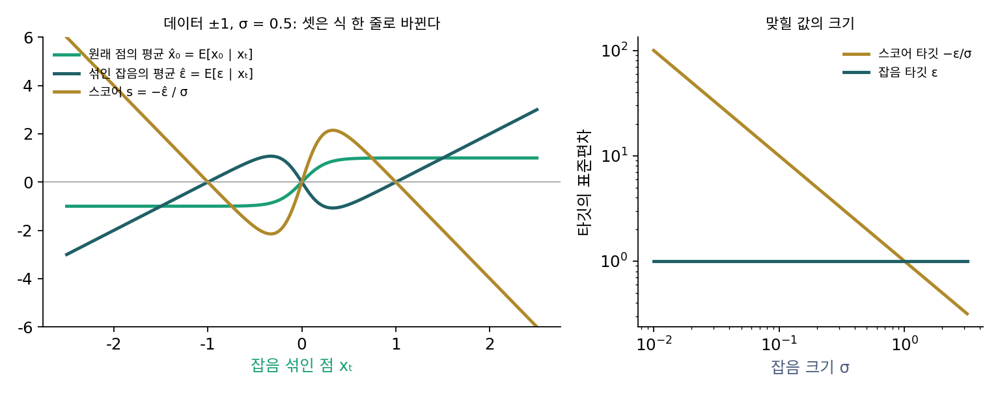

5장 — 잡음을 맞히는 신경망: DDPM과 잡음 제거 스코어 매칭
잡음 예측: 바늘 대신 섞은 잡음을 맞힌다
앞에서 신경망은 조건부 타깃 −ε/σt를 맞혔다. 잡음 수준이 하나면 상관없지만, 한 신경망이 모든 잡음 수준을 맡으면 걸리는 것이 있다. 타깃의 크기가 잡음 수준마다 다르다. ε는 표준편차가 1이니 타깃의 표준편차는 1/σt이다. 잡음이 2이면 0.5, 0.1이면 10, 0.01이면 100이다. 그림 한 장에 잡음을 1부터 0.01까지 섞어 가며 배우면, 출력이 맞혀야 할 숫자의 크기가 100배 오르내린다. 오차를 그대로 더하면 잡음이 가장 옅은 수준의 오차가 손실을 거의 다 차지한다. 맞히는 대상을 바꾸면 어떨까?
역사: 무엇을 맞힐지 저울질하기
송과 에르몬은 2019년 논문에서 이 문제를 손실의 가중치로 풀었다. 그들은 잘 학습된 신경망의 바늘 크기가 대략 1/σ에 비례한다는 것을 관찰하고, 잡음 수준마다 손실에 σ²를 곱했다. 그러면 수준마다 σ·sθ와 −ε의 거리를 재는 셈이 되어, 모든 수준의 손실 크기가 비슷해진다. 바늘에 σ를 곱한 것을 맞히는 일은 사실상 섞은 잡음을 맞히는 일이다.
이듬해 호(Jonathan Ho), 자인(Ajay Jain), 아빌(Pieter Abbeel)은 2020년 논문 「잡음 제거 디퓨전 확률 모델(Denoising Diffusion Probabilistic Models)」에서 이 선택을 신경망의 출력 자체로 옮겼다. 그들은 신경망이 무엇을 내놓게 할지를 실험으로 저울질했다. 거꾸로 한 걸음의 평균을 바로 맞히게 하면, 이론이 주는 손실 그대로 배울 때만 잘 되고 단순한 제곱 오차로 배우면 학습이 불안정했다. 원래 그림 x₀를 맞히게 하면 초기 실험에서 그림의 질이 더 나빴다. 섞은 잡음 ε를 맞히게 하자, 모든 잡음 수준에 같은 비중을 주는 가장 단순한 제곱 오차로 가장 좋은 그림이 나왔다.
셋은 같은 정보다
잡음 섞기를 원래 그림을 αt배로 줄이며 섞는 일반 꼴 xt = αtx₀ + σtε로 적자(α(알파)는 원래 그림이 남는 비율). 신경망이 섞인 잡음의 평균을 내놓는다면, 원래 그림의 평균과 바늘이 식 한 줄씩으로 따라 나온다.
가운데 식은 xt를 만든 식을 x₀에 대해 풀고 양변의 평균을 낸 것이다. 오른쪽 식은 트위디 공식 αtx̂₀ = xt + σt²s에 가운데 식을 넣으면 나온다. 앞의 두 점 데이터(α = 1, σ = 0.5)의 자리 0.3에서 확인하면, 원래 점의 평균이 0.834, 섞인 잡음의 평균이 (0.3 − 0.834)/0.5 = −1.067, 바늘이 1.067/0.5 = 2.135다. 앞에서 기록을 평균 내 얻은 바늘과 같다.

세 출력은 같은 정보를 다른 꼴로 적은 것이다. 무엇을 맞히게 하느냐는 무엇을 배우느냐가 아니라, 맞힐 숫자의 크기를 잡음 수준마다 고르게 만들어 학습을 쉽게 하느냐의 문제다. 신경망이 섞은 잡음을 맞히게 하는 이 꼴을 잡음 예측 (섞인 잡음을 맞히도록 신경망의 출력을 정하기 / ε-prediction)이라 하고, 그 신경망을 εθ(xt, t)로 적는다.
ML에서: 샘플러는 모두 x̂₀로 바꿔 읽는다
모델마다 신경망이 내놓는 것은 다르다. 잡음을 내놓는 모델, 원래 그림을 내놓는 모델, 둘을 섞은 다른 양을 내놓는 모델이 함께 쓰인다. 샐리먼스(Tim Salimans)와 호는 2022년 논문에서 걸음 수가 적을 때 더 안정하다는 새 출력 꼴을 내놓았고, 이것이 흔히 「v-예측」이라 부르는 것이다. 그림 생성 도구 ComfyUI는 모델이 무엇을 내놓든 샘플러에 넘기기 전에 원래 그림의 어림으로 바꾼다. 잡음을 내놓는 모델이면 「입력 − 출력 × 잡음 크기」를 계산한다(comfy/model_sampling.py 의 EPS). 이 코드는 α = 1인 꼴로 그림을 다루므로 가운데 식에서 αt가 빠진 모양이다.
문제 4. 만점이 다른 과목
점수 예측 앱이 한 학생의 세 시험 점수를 예측한다. 시험의 만점은 10점, 100점, 1,000점으로 다르고, 예측 오차는 세 과목 모두 만점의 5%였다. (가) 오차 제곱을 그대로 더하면 각 과목이 합에서 차지하는 몫은? (나) 점수를 만점으로 나눈 값을 예측하게 하면?

오차가 셋 다 5%로 같으니까 몫도 3분의 1씩이죠.

오차를 점수로 적어 볼까요?

0.5점, 5점, 50점이에요. 제곱하면 0.25, 25, 2,500이고… 1,000점짜리가 99.0%, 100점짜리가 0.99%, 10점짜리는 0.01%예요. 앱을 고치는 사람은 1,000점짜리 시험만 신경 쓰게 되겠네요.

(나)는 셋 다 0.05의 제곱인 0.0025라서 정확히 3분의 1씩이야. 크기를 맞춘 뒤에 더해야 셋을 공평하게 보는 거지.
같은 정보를 담은 숫자라도 크기를 어떻게 잡느냐에 따라 학습이 무엇에 매달리는지가 달라져요.
과제 채점 기준표에서 한 항목만 100점 만점이면 나머지 항목은 아무도 안 보는 거랑 같네요.
문제 5. 잡음 어림을 바늘로
원래 그림이 남는 비율이 αt = 0.8, 잡음 크기가 σt = 0.6인 잡음 섞기 xt = 0.8x₀ + 0.6ε에서, 데이터 두 점 ±1(반반)로 잡음 예측 신경망을 완벽하게 학습했다. 잡음 섞인 점 xt = −0.5를 넣었더니 ε̂ = 0.2393을 내놓았다. (가) 이 자리의 스코어는? (나) 원래 점의 평균 x̂₀은? (다) 두 값을 트위디 공식으로 서로 확인하라.
(나)부터요. xt에서 잡음을 빼면 원래 점이니까 −0.5 − 0.6 × 0.2393 = −0.644예요.
xt를 만든 식을 다시 봐요. x₀ 앞에 무엇이 곱해져 있었어요?
0.8이요. 잡음을 빼고 남은 건 0.8x₀니까 0.8로 나눠야 하네요. −0.644/0.8 = −0.8045예요. 데이터가 ±1이니까 −1 쪽으로 꽤 확실하다는 뜻이고요.
(가)는 조건부 바늘이 −(xt − x₀)/σ²였으니까 σ²로 나눠서 −0.2393/0.36 = −0.665야.
그 조건부 바늘은 어떤 잡음 섞기에서 나온 식이었죠? 지금 섞기에서 −(xt − ⋯)/σ²의 괄호 안을 ε로 적으면 무엇이 돼요?

아, 그건 α = 1일 때 식이에요. 지금은 xt − 0.8x₀ = 0.6ε이고, 바늘은 −ε/σ 꼴이에요. −0.2393/0.6 = −0.3988이에요. σ²로 나눈 건 xt − x₀를 σε로 바꾸는 걸 잊고 한 번 더 나눈 거였어요.

(다)는 트위디 공식으로 αx̂₀ = xt + σ²s니까 (−0.5 + 0.36 × (−0.3988))/0.8 = −0.8045예요. 제가 고친 값이랑 같아요. 이 데이터에서는 x̂₀ = tanh(0.8 × (−0.5)/0.36) = tanh(−1.111)로도 바로 나오고요. 이것도 −0.8045예요.

세 출력이 식 한 줄로 바뀐다는 건 쉽지만, 바꾸는 식에 α와 σ가 어디 붙는지는 잡음 섞기의 꼴마다 다시 적어야 해요.
선형대수에서 기저를 바꿀 때 행렬을 왼쪽에 곱하느냐 역행렬을 곱하느냐 헷갈리는 거랑 같네요. 어느 쪽에서 어느 쪽으로 가는지를 먼저 적어야 해요.
문제 6. 잡음이 짙을 때 한 번에 읽기
DDPM 논문의 잡음 일정(1000 걸음)에서 원래 그림이 남는 비율과 잡음 크기는 t = 100에서 α = 0.9471, σ = 0.3209, t = 500에서 0.2803, 0.9599, t = 900에서 0.0166, 0.9999, t = 1000에서 0.0064, 1.0000이다. 잡음 예측 신경망의 출력이 픽셀마다 0.01만큼 틀렸다. (가) 이 출력을 원래 그림의 어림 x̂₀로 바꾸면 픽셀마다 얼마나 틀리는가? 픽셀 값은 −1에서 1 사이다. (나) 같은 자리에서 원래 그림을 바로 맞히는 신경망이었다면?
0.01이면 아주 작은 오차예요. 어느 걸음에서든 그림은 거의 맞겠죠.
x̂₀로 바꾸는 식에 0.01을 넣어 봐요. 무엇을 곱하고 무엇으로 나눠요?

x̂₀ = (xt − σε̂)/α니까 오차가 0.01 × σ/α로 바뀌어요. t = 100이면 0.0034, 500이면 0.034, 900이면 0.60, 1000이면… 1.56이요. 픽셀 값의 폭이 2인데 그 절반을 훌쩍 넘어요.

잡음 맞히기는 걸음마다 오차가 고르게 작았는데, 바꿔 읽으니 마지막 걸음 근처에서 터지네. α로 나누는 게 문제야. 원래 그림이 0.0064배만 남았으니까.
t = 1000에서 xt는 거의 무엇이에요? 그 자리에서 섞인 잡음을 맞히는 건 어려운 일일까요?
xt가 거의 잡음 그 자체라서 ε̂ ≈ xt로 맞히기는 쉬워요. 그런데 원래 그림에 대해서는 아무것도 말해 주지 않아요. 쉬운 문제를 맞혀 놓고 거기서 어려운 답을 나눗셈으로 끌어내려니 작은 오차가 커지는 거예요.
(나)는 원래 그림을 바로 맞히면 오차가 그대로 0.01이니까 짙은 잡음 쪽에서는 그게 낫네요. 대신 옅은 잡음 쪽에서는 σ/α가 작아서 잡음 맞히기가 오히려 더 정확하고요. 걸음 수를 줄이는 방법들이 둘을 섞은 출력을 쓰는 까닭이 이거구나.

그래요. 같은 정보라도 어느 잡음 수준에서 어느 꼴이 다루기 쉬운지는 달라요. 걸음 수가 적으면 짙은 잡음에서 한 번에 멀리 뛰어야 하니 이 차이가 크게 드러나요.
조교님이 퍼센트 오차가 같아도 분모가 작은 항목은 따로 보라고 하신 게 이런 거였네요.